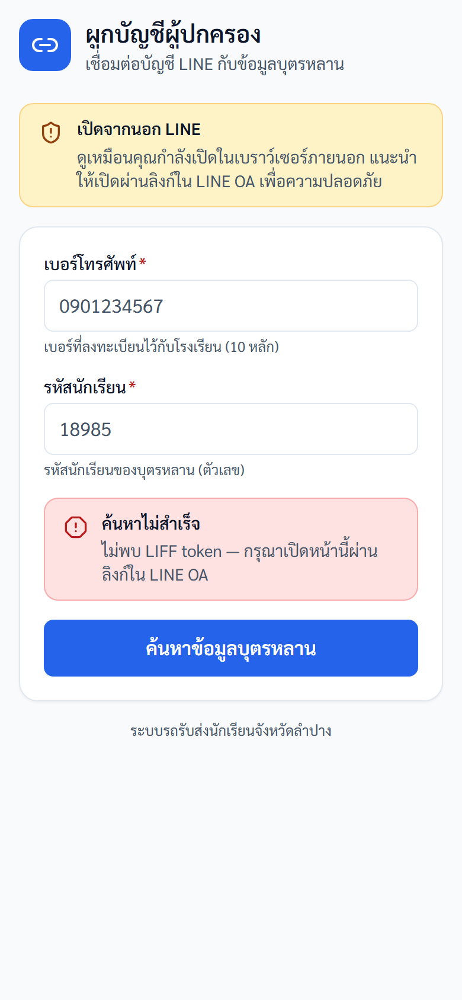
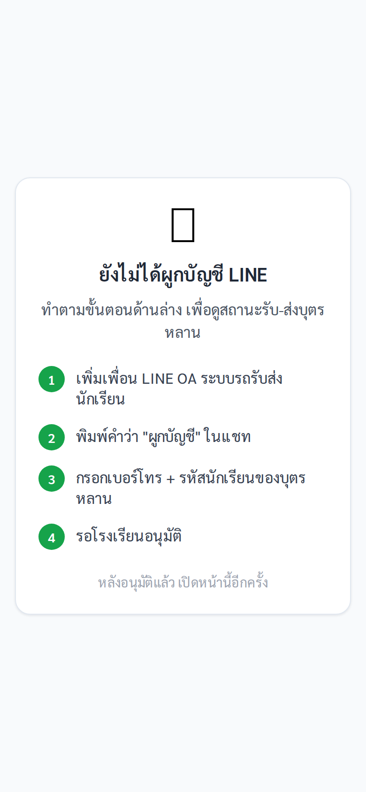
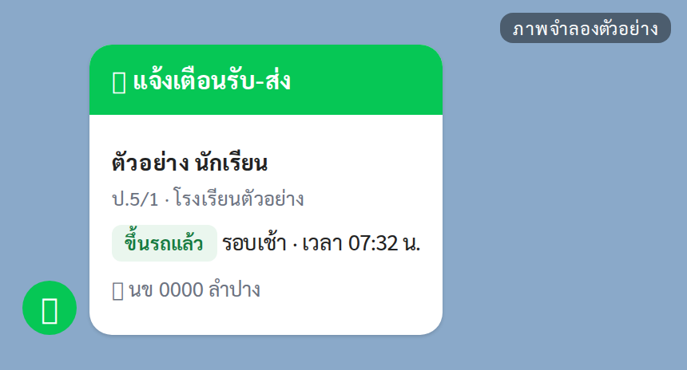
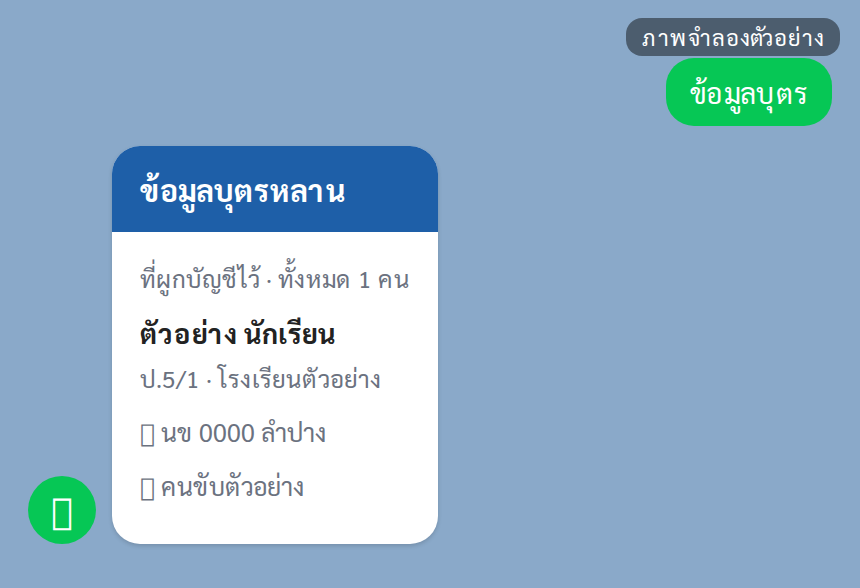
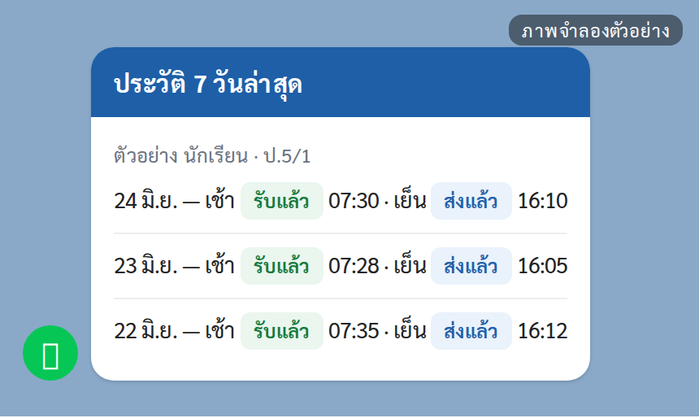
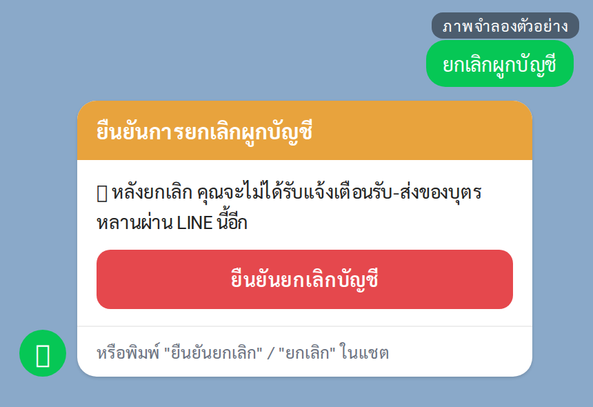
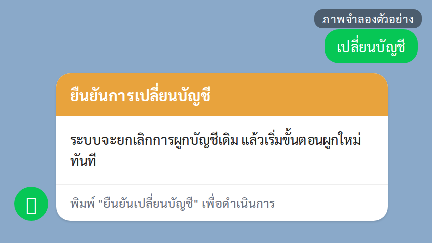
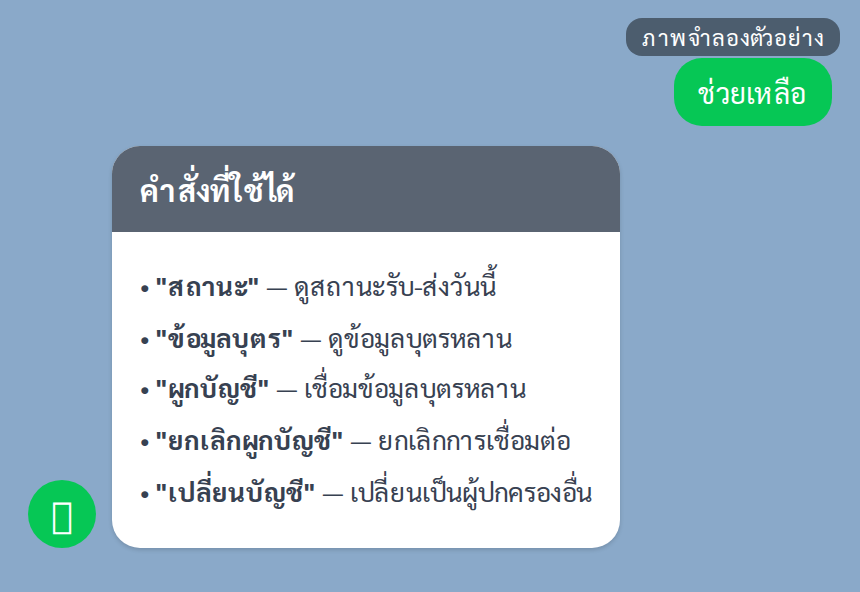

คู่มือปฏิบัติงาน — ผู้ปกครอง (LINE)
ระบบรถรับส่งนักเรียนจังหวัดลำปาง — https://schoolbuslampang.com เวอร์ชัน Phase 10.13C • อัปเดต 2026-06-24 • ปรับปรุงล่าสุด 2026-09-06 (ตรวจกับระบบจริง commit 14caf5b)
📷 หมายเหตุภาพหน้าจอ: ข้อมูลส่วนบุคคล (ชื่อ/เบอร์) ในภาพถูกเบลอเพื่อความเป็นส่วนตัว — เมื่อใช้งานจริงจะแสดงข้อมูลตามปกติ
ภาพรวม 30 วินาที
- บทบาทนี้ทำอะไรได้:
- ผูกบัญชี LINE เข้ากับข้อมูลบุตรหลาน (ด้วยเบอร์โทร + รหัสนักเรียน)
- ดูสถานะการรับ-ส่งวันนี้ของบุตรหลาน (รอบเช้า / รอบเย็น)
- ดูข้อมูลบุตรหลาน (ชั้น/ห้อง, โรงเรียน, ทะเบียนรถ, ชื่อผู้ขับ)
- ดูประวัติย้อนหลัง 7 วัน (ในหน้า LIFF)
- รับการแจ้งเตือนทาง LINE อัตโนมัติเมื่อคนขับเช็กชื่อบุตรหลาน
- ยกเลิกการผูกบัญชี / เปลี่ยนบัญชีผู้ปกครอง
- เข้าระบบด้วย: บัญชี LINE ของคุณ — ไม่มีชื่อผู้ใช้/รหัสผ่าน ระบบยืนยันตัวตนจากบัญชี LINE อัตโนมัติ ทุกอย่างทำผ่านแชต LINE OA และหน้า LIFF (หน้าเว็บที่เปิดจากลิงก์ใน LINE)
- อุปกรณ์ที่แนะนำ: มือถือที่ติดตั้งแอป LINE — เปิดทุกหน้าจากลิงก์ใน LINE OA เท่านั้น (ห้ามเปิดในเบราว์เซอร์ภายนอก จะยืนยันตัวตนไม่ได้)
💡 เพิ่มบัญชี LINE OA ของระบบรถรับส่งเป็นเพื่อนไว้ แล้วปักหมุดแชตไว้ด้านบน เพื่อเข้าถึงได้รวดเร็ว
สารบัญงาน
| # | งาน | ใช้เมื่อ |
|---|---|---|
| 1 | เข้าใช้งาน (ผูกบัญชี) | ครั้งแรกที่เริ่มใช้งาน |
| 2 | ดูสถานะรับ-ส่งวันนี้ | งานประจำวัน ใช้บ่อยสุด |
| 3 | รับการแจ้งเตือนทาง LINE | ทุกวันโดยอัตโนมัติ |
| 4 | ดูข้อมูลบุตรหลาน | ตรวจรถ/ชั้น/คนขับ |
| 5 | ดูประวัติย้อนหลัง 7 วัน | ตรวจย้อนหลัง |
| 6 | ดู ETA เวลาถึงโดยประมาณ | (⚠️ ฟีเจอร์ยังปิด) |
| 7 | ดูข้อมูลรถจาก QR + ความยินยอม PDPA | (⚠️ ฟีเจอร์ยังปิด) |
| 8 | ยกเลิกผูกบัญชี | เลิกใช้/เปลี่ยนเครื่อง |
| 9 | เปลี่ยนบัญชี (สลับผู้ปกครอง) | เปลี่ยนผู้ปกครอง/เบอร์ |
| 10 | ใช้เมนูคำสั่งในแชต | อ้างอิงคำสั่งทั้งหมด |
ℹ️ ผู้ปกครองไม่มีรายงาน/ส่งออกไฟล์ — ไม่มีรายงานรายวัน/รายเดือน/สรุป และไม่มีไฟล์ CSV/Excel/PDF (เป็นสิทธิ์ของโรงเรียน/เขต/ส่วนกลาง/admin) สิ่งที่ทำได้คือ "ดู" สถานะ ข้อมูลบุตรหลาน และประวัติย้อนหลังของบุตรหลานตัวเองเท่านั้น
งานที่ 1 — เข้าใช้งาน (ผูกบัญชี)
ใช้เมื่อ: ครั้งแรกที่เริ่มใช้งาน — ต้องผูกบัญชีก่อนจึงจะดูสถานะและรับการแจ้งเตือนได้ (ระบบตรวจจาก เบอร์โทรผู้ปกครอง + รหัสนักเรียน)
ทาง A — ผ่านฟอร์มในหน้า LIFF (แนะนำ)
ขั้นตอน:
- พิมพ์ "ผูกบัญชี" ในแชต LINE OA แล้วกดปุ่ม "📝 เปิดฟอร์มผูกบัญชี" บนการ์ดที่ระบบส่งมา — ระบบจะเปิดหน้า "ผูกบัญชีผู้ปกครอง" (ใต้ชื่อหน้าเขียนว่า "เชื่อมต่อบัญชี LINE กับข้อมูลบุตรหลาน")
- กรอก เบอร์โทรศัพท์ (10 หลัก) และ รหัสนักเรียน
- กดปุ่ม "ค้นหาข้อมูลบุตรหลาน"
- ตรวจหน้า "ตรวจสอบข้อมูล" — ชื่อนักเรียน / ชั้น / โรงเรียน และเบอร์โทรที่ถูกปิดบางส่วน (เช่น
090****567) - กด "ยืนยันผูกบัญชี" ถ้าถูกต้อง (หรือ "ย้อนกลับ" เพื่อแก้)
- เมื่อขึ้นหน้า "ผูกบัญชีสำเร็จ" (มีข้อความ "ระบบได้เชื่อมต่อบัญชี LINE ของคุณกับข้อมูลบุตรหลานเรียบร้อยแล้ว") ให้ปิดหน้านั้น กลับไปที่แชต แล้วพิมพ์ "สถานะ" เพื่อทดสอบ — ระบบจะส่งการ์ด "ผูกบัญชีสำเร็จ" เข้าแชตให้ด้วย

ภาพ: ผูกบัญชีผู้ปกครอง (ภาพนี้ถ่ายนอกแอป LINE จึงมีแถบ "เปิดจากนอก LINE" และข้อความ "ไม่พบ LIFF token" ติดมาด้วย — เมื่อเปิดจากลิงก์ในแชต LINE จะไม่มีสองแถบนี้)
⚠️ ฟอร์มในหน้า LIFF บังคับรหัสนักเรียนเป็นตัวเลขเท่านั้น — ถ้ารหัสนักเรียนมีตัวอักษรปน ให้ผูกผ่านแชต (ทาง B) แทน
ทาง B — ผ่านแชต LINE
ขั้นตอน:
- พิมพ์ "ผูกบัญชี" ในแชต
- พิมพ์ เบอร์โทรผู้ปกครอง (10 หลัก) เมื่อระบบขอ
- พิมพ์ รหัสนักเรียน เมื่อระบบขอ
- รอระบบผูกอัตโนมัติ แล้วส่งการ์ด "ผูกบัญชีสำเร็จ"
ℹ️ ขั้นตอนผูกผ่านแชตหมดอายุภายใน 30 นาที — ถ้าทำค้างนานเกินไปต้องพิมพ์ "ผูกบัญชี" เริ่มใหม่ • พิมพ์ "ยกเลิก" เพื่อเริ่มต้นใหม่ได้ทุกเมื่อ
✅ ผลลัพธ์ที่ถูกต้อง: ขึ้นหน้า/การ์ด "ผูกบัญชีสำเร็จ" และพิมพ์ "สถานะ" แล้วเห็นข้อมูลบุตรหลาน
⚠️ ถ้าติดปัญหา:
- "ไม่พบข้อมูลที่ตรงกัน" → ตรวจ (ก) เบอร์โทรตรงกับที่ลงทะเบียนกับโรงเรียน (ข) รหัสนักเรียนถูกต้อง (ค) โรงเรียนอนุมัติคุณเป็นผู้ปกครองแล้วหรือยัง (ถ้ายังไม่อนุมัติจะผูกไม่ได้ ติดต่อโรงเรียน)
- "บัญชี LINE นี้ผูกอยู่กับผู้ปกครองท่านอื่นแล้ว..." → พิมพ์ "ยกเลิกผูกบัญชี" ก่อน (งานที่ 8)
- "เบอร์นี้ผูก LINE อื่นไว้แล้ว" → เบอร์นี้ถูกใช้กับ LINE อื่น ใช้คำสั่ง "เปลี่ยนบัญชี" (งานที่ 9) หรือยกเลิกที่เครื่องเดิม
- "พยายามหลายครั้งเกินไป กรุณารอสักครู่แล้วลองใหม่อีกครั้ง" → กรอกเบอร์โทรคู่กับรหัสนักเรียนผิดคู่เดิมครบ 5 ครั้งภายใน 10 นาที ระบบจะล็อกคู่นั้นไว้ 30 นาที (เกิดได้ทั้งทางฟอร์มและทางแชต) — สอบถามเบอร์โทรและรหัสนักเรียนที่ถูกต้องจากโรงเรียนก่อน แล้วค่อยลองใหม่
- "มีการพยายามผูกบัญชีหลายครั้งเกินไป กรุณาลองใหม่ภายหลัง" → ขึ้นเฉพาะฟอร์มในหน้า LIFF (ทาง A) เมื่อมีการกดผูกบัญชีถี่เกินไปจากอินเทอร์เน็ตวงเดียวกัน (เช่น หลายคนใช้ Wi-Fi เดียวกันพร้อมกัน) ไม่ใช่การกรอกข้อมูลผิด — รอสักครู่แล้วลองใหม่ หรือผูกผ่านแชต (ทาง B) แทน
- ไม่ทราบรหัสนักเรียน → สอบถามครูประจำชั้นหรือเจ้าหน้าที่โรงเรียน
⚠️ ใช้ เบอร์โทรผู้ปกครอง + รหัสนักเรียน เท่านั้นในการผูกบัญชี • เบอร์โทรต้องเป็นเลข 10 หลัก
งานที่ 2 — ดูสถานะรับ-ส่งวันนี้
ใช้เมื่อ: ต้องการรู้ว่าบุตรหลานขึ้นรถ/ถึงจุดรับแล้วหรือยัง (งานที่ใช้บ่อยที่สุด)
ในแชต LINE
ขั้นตอน:
- พิมพ์ "สถานะ"
- อ่านการ์ด "สถานะรับ-ส่งวันนี้" ต่อบุตรหลานแต่ละคน — แสดง:
- ชื่อนักเรียน, ชั้น/ห้อง · โรงเรียน
- รอบเช้า: "ขึ้นรถแล้ว HH:MM" หรือ "ยังไม่ขึ้นรถ"
- รอบเย็น: "ส่งถึงจุดรับแล้ว HH:MM" หรือ "ยังไม่ส่งถึงจุดรับ"
- 🚌 ทะเบียนรถ และ 👤 ชื่อผู้ขับ
ในหน้า LIFF
ขั้นตอน:
- เปิดหน้า LIFF จากลิงก์ใน LINE → เลือกบุตรหลาน
- กด "สถานะวันนี้" → ดูการ์ด "ส่งเช้า" (ขึ้น "ส่งถึงแล้ว" พร้อมเวลา หรือ "ยังไม่ส่ง") และ "รับเย็น" (ขึ้น "รับแล้ว" พร้อมเวลา หรือ "ยังไม่รับ") — ถ้ายังไม่มีการเช็กชื่อวันนี้เลย จะขึ้น "ยังไม่มีข้อมูลเช็คอินวันนี้"
- ถ้าต้องการดูข้อมูลล่าสุดอีกครั้ง กด "รีเฟรชสถานะ" ที่ด้านล่าง · กด "กลับ" ที่มุมขวาบนเพื่อกลับไปหน้ารายชื่อบุตรหลาน

ภาพ: หน้าจอเมื่อระบบยังอ่านบัญชี LINE ไม่ได้ หรือยังไม่ได้ผูกบัญชี — ยังไม่ใช่หน้าสถานะ (ถ้าเปิดจากลิงก์ในแชต LINE จะเข้าหน้ารายชื่อบุตรหลานและหน้าสถานะได้ตามปกติ)
✅ ผลลัพธ์ที่ถูกต้อง: เห็นสถานะรอบเช้า/รอบเย็นของบุตรหลานพร้อมเวลา และข้อมูลรถ/คนขับ
⚠️ ถ้าติดปัญหา:
- การ์ดในแชตแสดงสูงสุด 3 คน — ถ้ามีมากกว่านั้นจะขึ้นบรรทัด "แสดง 3 จาก N คน · มีข้อมูลเพิ่มเติม กรุณาติดต่อโรงเรียน" → เปิด หน้า LIFF ซึ่งแสดงบุตรหลานครบทุกคน (ไม่จำกัดจำนวน)
- หน้า LIFF ขึ้น "ไม่พบข้อมูลบุตรหลาน" → หน้านี้จะขึ้นเมื่อยังไม่มีบุตรหลานที่โรงเรียนอนุมัติแม้แต่คนเดียว (มักเพราะเพิ่งผูกบัญชีและยังรออนุมัติ) — รอโรงเรียนอนุมัติ แล้วกดปุ่ม "รีเฟรชข้อมูล" (เมื่อมีรายชื่อแล้ว ปุ่มมุมขวาบนของหน้ารายชื่อบุตรหลานคือ "รีเฟรช")
- หน้า LIFF ขึ้น "ยังไม่ได้ผูกบัญชี LINE" พร้อมขั้นตอน 1-4 ทั้งที่เคยผูกไว้แล้ว → ระบบอ่านบัญชี LINE ไม่ได้ มักเพราะไม่ได้เปิดจากลิงก์ในแชต LINE OA — ปิดหน้านั้นแล้วเปิดลิงก์จากแชตใหม่
งานที่ 3 — รับการแจ้งเตือนทาง LINE
ใช้เมื่อ: อัตโนมัติทุกครั้งที่คนขับเช็กชื่อบุตรหลาน (ส่งเช้า / รับเย็น) — ไม่ต้องตั้งค่าอะไร
ขั้นตอน:
- ผูกบัญชีและได้รับอนุมัติจากโรงเรียนเรียบร้อย (งานที่ 1)
- รอรับข้อความ "📢 แจ้งเตือน: ..." เข้า LINE — มีชื่อนักเรียน, สถานะ, รอบ (เช้า/เย็น) และเวลา
✅ ผลลัพธ์ที่ถูกต้อง: ได้รับข้อความแจ้งเตือนเข้า LINE เมื่อบุตรหลานถูกเช็กชื่อ (เฉพาะบุตรหลานที่ผูกบัญชี + โรงเรียนอนุมัติแล้ว)
⚠️ ถ้าติดปัญหา:
- ℹ️ ระบบส่งการแจ้งเตือน เป็นรอบ ตามการตั้งค่าของผู้ดูแลระบบ ไม่ได้ส่งวินาทีเดียวกับที่คนขับกดเช็กชื่อ ข้อความจึงมาถึงหลังเวลาที่ระบุอยู่ในข้อความอยู่บ้าง — เป็นการทำงานปกติ ไม่ใช่ระบบขัดข้อง
- การแจ้งเตือนมาช้ามาก/ไม่มาในบางช่วง (กระบวนการส่งเบื้องหลังไม่ทำงาน) → พิมพ์ "สถานะ" เพื่อดูสถานะล่าสุดด้วยตัวเองได้เสมอ • ถ้าเป็นบ่อยให้แจ้งโรงเรียน/ผู้ดูแลระบบ
- ℹ️ ข้อความที่ค้างนานเกิน 3 ชั่วโมง ระบบจะไม่ส่งย้อนหลัง (ป้องกันข้อความเก่าถูกส่งพร้อมกันจำนวนมาก)

ภาพ: ภาพจำลองแนวคิดการแจ้งเตือน — ของจริงมาเป็น ข้อความธรรมดา 5 บรรทัด ขึ้นต้นด้วย "📢 แจ้งเตือน: ส่งเช้า" แล้วตามด้วย "นักเรียน: …", "สถานะ: CHECKED_IN", "รอบ: เช้า" และ "เวลา: …" (ไม่ใช่การ์ดสีเขียวอย่างในภาพ)
งานที่ 4 — ดูข้อมูลบุตรหลาน
ใช้เมื่อ: ต้องการตรวจชั้น/ห้อง, โรงเรียน, ทะเบียนรถ, ชื่อคนขับของบุตรหลาน
ขั้นตอน:
- พิมพ์ "ข้อมูลบุตร" ในแชต
- อ่านการ์ด "ข้อมูลบุตรหลาน" — แสดง ชื่อนักเรียน, ชั้น/ห้อง · โรงเรียน, 🚌 ทะเบียนรถ, 👤 ชื่อผู้ขับ (สูงสุด 3 คน)
✅ ผลลัพธ์ที่ถูกต้อง: เห็นข้อมูลบุตรหลานทุกคนที่ผูกบัญชีและได้รับอนุมัติแล้ว (รวมพี่น้องที่ใช้เบอร์โทรเดียวกัน)

ภาพ: ภาพจำลองการ์ด "ข้อมูลบุตรหลาน" — การ์ดจริงจะขึ้นหัวข้อรองว่า "ที่ผูกบัญชีไว้" เมื่อมีบุตรหลานคนเดียว หรือ "ทั้งหมด N คน" เมื่อมีหลายคน (อิโมจิในภาพจำลองบางตัวแสดงเป็นกล่องว่างเพราะฟอนต์ของเอกสาร)
งานที่ 5 — ดูประวัติย้อนหลัง 7 วัน
ใช้เมื่อ: ต้องการตรวจสถานะรับ-ส่งย้อนหลัง (หน้า LIFF เท่านั้น)
ขั้นตอน:
- เปิดหน้า LIFF จากลิงก์ใน LINE → เลือกบุตรหลาน
- กด "ย้อนหลัง" → อ่าน "ประวัติ 7 วันล่าสุด" — แต่ละรายการคือ 1 รอบ แสดง วันที่ · รอบ ("ส่งเช้า" หรือ "รับเย็น") · สถานะ (รับแล้ว, ส่งแล้ว, ไม่มา, ยกเลิก) และเวลา — ถ้าไม่มีข้อมูลจะขึ้น "ไม่มีประวัติในช่วงนี้"
✅ ผลลัพธ์ที่ถูกต้อง: เห็นรายการประวัติ 7 วันล่าสุดของบุตรหลาน

ภาพ: ภาพจำลองประวัติย้อนหลัง — หน้าจอจริงแสดงเป็นรายการ 1 บรรทัดต่อ 1 รอบ (วันที่ · "ส่งเช้า"/"รับเย็น" · สถานะ · เวลา)
งานที่ 6 — ดู ETA เวลาถึงโดยประมาณ
ใช้เมื่อ: ต้องการรู้เวลารถถึงโดยประมาณ (หน้า LIFF เท่านั้น)
⚠️ ฟีเจอร์นี้ยังไม่เปิดใช้งานบนระบบจริง (feature flag
FEATURE_ETAปิดอยู่) ปุ่ม "ETA" ยังแสดงบนการ์ดของบุตรหลานทุกคน แต่เมื่อกดจะได้การ์ด "เวลาถึงโดยประมาณ (ETA)" ที่ ไม่มีข้อมูล — ไม่มีทะเบียนรถ ไม่มีชื่อจุดรับ เวลาแสดงเป็น "—" พร้อม "ระยะทาง ไม่ทราบ" และ "ความมั่นใจ: ไม่ทราบ" ไม่ใช่ความผิดพลาดของเครื่องท่าน — ให้ใช้ปุ่ม "สถานะวันนี้" ดูสถานะรับ-ส่งตามปกติแทน
ขั้นตอน (ใช้ได้เมื่อเปิดใช้งานฟีเจอร์นี้แล้วเท่านั้น):
- เปิดหน้า LIFF → เลือกบุตรหลาน
- กด "ETA" → ถ้าเปิดใช้งานแล้วและรถกำลังวิ่ง จะเห็นทะเบียนรถ, ชื่อจุดรับ, เวลาถึงโดยประมาณ (นาที), ระยะทาง (กม.), ระดับความมั่นใจ (สูง/ปานกลาง/ต่ำ), ระยะเวลาตั้งแต่อัปเดตล่าสุด และปุ่ม "รีเฟรช ETA"
✅ ผลลัพธ์ที่ถูกต้อง (เมื่อเปิดใช้งาน): เห็นเวลาถึงโดยประมาณและระยะทาง
⚠️ ถ้าติดปัญหา: ข้อความ "ยังไม่มีข้อมูล ETA — รถอาจออฟไลน์ หรือยังไม่เริ่มรอบ" จะขึ้นเมื่อโหลดข้อมูลไม่สำเร็จ (เช่น สัญญาณอินเทอร์เน็ตหลุด) — ทั้งสองกรณีให้ใช้ปุ่ม "สถานะวันนี้" แทน
📷 ไม่มีภาพหน้าจอ — ฟีเจอร์ ETA ถูกปิดด้วย feature flag (
FEATURE_ETA) ยังไม่เปิดใช้งานจริง
งานที่ 7 — ดูข้อมูลรถจาก QR + ความยินยอม PDPA
ใช้เมื่อ: ต้องการดูข้อมูลรถจากการสแกน QR ที่ติดบนตัวรถ
⚠️ ฟีเจอร์นี้เปิดเมื่อ enable (feature flag
FEATURE_VEHICLE_QR) — ปัจจุบันยังปิดอยู่ในการใช้งานจริง เมื่อยังปิด การสแกน QR จะเปิดหน้าไม่ได้ (พบ "ไม่พบหน้า / 404")
ขั้นตอน (เมื่อเปิดใช้งานแล้ว):
- สแกน QR ที่ติดบนตัวรถ
- ดูข้อมูลรถตามระดับสิทธิ์:
- ระดับ 1 (ใครก็ดูได้): ทะเบียนรถ, ประเภทรถ, สถานะการรับรอง, สถานะตรวจสภาพ (+วันหมดอายุ), สถานะประกันภัย, สถานะคนขับ, สถานะเอกสาร — ไม่มีชื่อ/เบอร์คนขับ
- ระดับ 2 (เฉพาะผู้ปกครองของนักเรียนบนรถคันนั้น ที่เปิดผ่าน LINE และให้ความยินยอมแล้ว): เพิ่ม ชื่อคนขับ และ ช่องทางติดต่อฉุกเฉิน (กดโทรได้)
- ถ้าระบบขอความยินยอม (หัวข้อ "แจ้งการเก็บและใช้ข้อมูลส่วนบุคคล (สำหรับผู้ปกครอง)") ให้ ติ๊กช่อง "ข้าพเจ้ายินยอมให้แสดงชื่อคนขับและช่องทางติดต่อฉุกเฉิน" ด้วยตัวเอง แล้วกด "ยืนยันความยินยอม" (ปุ่มกดไม่ได้จนกว่าจะติ๊ก ระบบไม่ติ๊กให้ล่วงหน้า) — ถ้ายังไม่พร้อมให้กด "ไม่ใช่ตอนนี้" จะยังดูข้อมูลรถระดับ 1 ได้ตามปกติ
✅ ผลลัพธ์ที่ถูกต้อง (เมื่อเปิดใช้งาน): เห็นข้อมูลรถระดับ 2 สำหรับรถที่บุตรหลานนั่งจริง และระดับ 1 สำหรับรถคันอื่น
⚠️ ถ้าติดปัญหา:
- สแกน QR แล้วขึ้น 404 → ฟีเจอร์ยังปิดในการใช้งานจริง ยังใช้ไม่ได้ในตอนนี้
- ℹ️ เห็นข้อมูลระดับ 2 ได้เฉพาะ รถคันที่บุตรหลานนั่งจริง และต้องให้ความยินยอมก่อน รถคันอื่นเห็นได้แค่ระดับ 1
- ℹ️ ถอนความยินยอมได้ภายหลัง — เมื่อถอนแล้ว สิทธิ์การดู QR จะกลับเป็นระดับ 1 ทันที
📷 ไม่มีภาพหน้าจอ — ฟีเจอร์ QR + ความยินยอม PDPA ถูกปิดด้วย feature flag (
FEATURE_VEHICLE_QR) ยังไม่เปิดใช้งานจริง
งานที่ 8 — ยกเลิกผูกบัญชี
ใช้เมื่อ: ต้องการเลิกผูกบัญชี LINE นี้กับบุตรหลาน (หลังยกเลิกจะไม่ได้รับการแจ้งเตือนอีก)
ขั้นตอน:
- พิมพ์ "ยกเลิกผูกบัญชี" ในแชต
- อ่านการ์ดยืนยัน (แสดงบุตรหลานที่ผูกอยู่ + คำเตือน)
- กดปุ่ม "ยืนยันยกเลิกบัญชี" (หรือพิมพ์ "ยืนยันยกเลิก") — หรือกด "ไม่ยกเลิก" เพื่อยกเลิกคำสั่ง
- รอการ์ด "ยกเลิกผูกบัญชีสำเร็จ"
✅ ผลลัพธ์ที่ถูกต้อง: ขึ้นการ์ด "ยกเลิกผูกบัญชีสำเร็จ"
⚠️ ถ้าติดปัญหา: ถ้ายังไม่เคยผูกบัญชี ระบบจะแจ้งว่า "ยังไม่ได้ผูกบัญชี"

ภาพ: ภาพจำลองการ์ดยืนยันยกเลิกผูกบัญชี — การ์ดจริงจะแสดงรายชื่อบุตรหลานที่ผูกอยู่ และมีปุ่ม "ไม่ยกเลิก" อยู่ใต้ปุ่มสีแดงด้วย
งานที่ 9 — เปลี่ยนบัญชี (สลับผู้ปกครอง)
ใช้เมื่อ: ต้องการให้บัญชี LINE นี้ผูกกับผู้ปกครอง/เบอร์โทรอื่น
ขั้นตอน:
- พิมพ์ "เปลี่ยนบัญชี" ในแชต
- อ่านการ์ดยืนยัน (แสดงบัญชีปัจจุบัน + เบอร์ที่ถูกปิดบางส่วน)
- พิมพ์ "ยืนยันเปลี่ยนบัญชี"
- ระบบยกเลิกการผูกเดิมแล้วเริ่มขั้นตอนผูกใหม่ทันที (กลับไปขั้นตอนขอเบอร์โทร) — ทำต่อตามงานที่ 1 ทาง B
✅ ผลลัพธ์ที่ถูกต้อง: ระบบเริ่มขั้นตอนผูกใหม่ (ขอเบอร์โทร) ทำต่อจนผูกสำเร็จ

ภาพ: ตัวอย่างการ์ดยืนยันเปลี่ยนบัญชีในแชต LINE (ภาพจำลอง)
งานที่ 10 — ใช้เมนูคำสั่งในแชต
ใช้เมื่อ: ต้องการเรียกเมนูหรืออ้างอิงคำสั่งทั้งหมด
ขั้นตอน:
- พิมพ์ "ช่วยเหลือ" (หรือ เมนู / menu / help) เพื่อแสดงเมนูคำสั่งทั้งหมด
- เลือกคำสั่งที่ต้องการจากตารางด้านล่าง (พิมพ์ไทยหรืออังกฤษก็ได้ ไม่สนตัวพิมพ์เล็ก-ใหญ่)
| พิมพ์คำสั่ง | คำพ้องที่ใช้ได้ | ทำอะไร |
|---|---|---|
| ผูกบัญชี | ลงทะเบียน / ผูก / link | เริ่มผูกบัญชีผู้ปกครอง |
| สถานะ | status | ดูสถานะรับ-ส่งวันนี้ |
| ข้อมูลบุตร | ลูก / ข้อมูลลูก / children | ดูข้อมูลบุตรหลานที่ผูกไว้ |
| ยกเลิกผูกบัญชี | ยกเลิกบัญชี / ยกเลิกผูก / unlink | ยกเลิกการเชื่อมต่อ |
| เปลี่ยนบัญชี | เปลี่ยนผู้ใช้ / เปลี่ยนผู้ปกครอง / rebind | สลับเป็นผู้ปกครองคนอื่น |
| ช่วยเหลือ | เมนู / menu / help | แสดงเมนูคำสั่งทั้งหมด |
| ยกเลิก | cancel | ยกเลิกขั้นตอนที่ค้างอยู่ |
✅ ผลลัพธ์ที่ถูกต้อง: เห็นเมนูคำสั่ง — เนื้อหาเมนูจะต่างกันตามสถานะ (ยังไม่ผูกบัญชี = เน้น "ผูกบัญชี"; ผูกแล้ว = เพิ่ม "ยกเลิกผูกบัญชี" และ "เปลี่ยนบัญชี")
ℹ️ ระบบยังไม่มี Rich Menu (เมนูปุ่มด้านล่างแชต) — ใช้วิธี "พิมพ์คำสั่ง" และกดปุ่มในการ์ดข้อความ (Flex card) ที่ระบบส่งมา ⚠️ หน้า LIFF ต้องเปิดจาก ลิงก์ใน LINE OA เท่านั้น — ถ้าเปิดผิดทาง หน้าสถานะจะขึ้นการ์ด "ยังไม่ได้ผูกบัญชี LINE" พร้อมขั้นตอน 1-4 (ขึ้นแบบนี้แม้เคยผูกบัญชีไว้แล้ว) ส่วนหน้าผูกบัญชีจะขึ้นแถบเตือน "เปิดจากนอก LINE" และถ้ากด "ค้นหาข้อมูลบุตรหลาน" จะขึ้นกล่องสีแดง "ค้นหาไม่สำเร็จ" พร้อมข้อความให้เปิดหน้านี้ผ่านลิงก์ใน LINE OA — ให้ปิดหน้านั้นแล้วกลับไปเปิดลิงก์จากแชต LINE OA ใหม่

ภาพ: ภาพจำลองเมนูคำสั่ง — การ์ดจริงชื่อ "เมนูใช้งาน LINE OA" และจะแสดงคำสั่งต่างกันตามสถานะ (ยังไม่ผูกบัญชีจะมี "ผูกบัญชี"; ผูกแล้วจะมี "ยกเลิกผูกบัญชี" และ "เปลี่ยนบัญชี" แทน)
ตารางขอบเขตสิทธิ์ (อ้างอิงด่วน)
คุณเห็นข้อมูลได้แค่ไหน
| ข้อมูล | ขอบเขต |
|---|---|
| บุตรหลาน | เฉพาะคนที่ ผูกบัญชี + โรงเรียนอนุมัติแล้ว (รวมพี่น้องที่ใช้เบอร์โทรเดียวกัน) |
| สถานะรับ-ส่ง | เฉพาะบุตรหลานของคุณ (รอบเช้า/เย็นวันนี้) |
| ประวัติย้อนหลัง | เฉพาะบุตรหลานของคุณ (7 วันในหน้า LIFF) |
| ข้อมูลรถ | ทะเบียนรถ + ชื่อผู้ขับ ของรถที่บุตรหลานนั่ง |
| ข้อมูลรถจาก QR | รถคันที่บุตรหลานนั่ง = ระดับ 2, รถคันอื่น = ระดับ 1 (เมื่อเปิดใช้งาน QR) |
ℹ️ เพื่อความเป็นส่วนตัว ระบบจะ ปิดบังเบอร์โทรบางส่วน (เช่น
090****567)
สิ่งที่ทำไม่ได้ (และใครทำแทน)
| ทำไม่ได้ | ใครทำแทน |
|---|---|
| อนุมัติการผูกบุตรหลานเอง | โรงเรียน (ต้องอนุมัติก่อน คุณจึงผูกบัญชีได้) |
| แก้ไขข้อมูลนักเรียน / เบอร์โทร / รถ | โรงเรียน |
| เช็กอิน / เช็กเอาท์ (รับ-ส่ง) | คนขับ (หรือครูยืนยันแทน) |
| ดูข้อมูลรถคันอื่น / นักเรียนคนอื่น | — (ทำไม่ได้) |
| ดูรายงาน / ส่งออกไฟล์ / audit log | บทบาทอื่น (โรงเรียน/เขต/ส่วนกลาง/admin) |
ℹ️ ถ้าพยายามเข้าดูข้อมูลที่ไม่ใช่ของบุตรหลานตัวเอง ระบบจะปฏิเสธ (เช่น "Student not linked to this account")
ขอความช่วยเหลือ:
- ผูกบัญชีไม่ได้ / ข้อมูลนักเรียนหรือเบอร์โทรไม่ถูกต้อง / ยังไม่ได้รับการอนุมัติ → ติดต่อ โรงเรียน
- ไม่ได้รับการแจ้งเตือนทาง LINE เป็นเวลานาน → ตรวจว่าผูกบัญชีและได้รับอนุมัติแล้ว ถ้ายังเป็น แจ้งโรงเรียน/ผู้ดูแลระบบ
- ต้องการแก้สถานะรับ-ส่ง / ข้อมูลที่ผิด → ติดต่อ โรงเรียน
- เตรียมข้อมูลให้พร้อมเมื่อแจ้งปัญหา: ชื่อ-นามสกุลนักเรียน + โรงเรียน, เบอร์โทรที่ใช้ผูกบัญชี, ภาพหน้าจอข้อความผิดพลาด, เวลาที่เกิดปัญหา
สรุปปัญหาที่พบบ่อย
| อาการ | วิธีแก้ |
|---|---|
| ผูกบัญชีไม่สำเร็จ "ไม่พบข้อมูลที่ตรงกัน" | ตรวจเบอร์โทรตรงกับที่ลงทะเบียนกับโรงเรียน + รหัสนักเรียนถูกต้อง + โรงเรียนอนุมัติแล้วหรือยัง (ยังไม่อนุมัติจะผูกไม่ได้ ติดต่อโรงเรียน) |
| ไม่ทราบรหัสนักเรียน | สอบถามครูประจำชั้น/เจ้าหน้าที่โรงเรียน (ใช้คู่กับเบอร์โทรที่ลงทะเบียนไว้) |
| ฟอร์มบอก "รหัสนักเรียนต้องเป็นตัวเลข" แต่รหัสมีตัวอักษร | ผูกผ่าน แชต LINE แทน (พิมพ์ "ผูกบัญชี") |
| "พยายามหลายครั้งเกินไป กรุณารอสักครู่" | กรอกผิดหลายครั้ง ระบบล็อกชั่วคราว — รอประมาณ 30 นาทีแล้วลองใหม่ ตรวจข้อมูลให้ถูกก่อน |
| ผูกสำเร็จแต่ไม่ได้รับการแจ้งเตือน | กระบวนการส่งเบื้องหลังบางช่วงอาจไม่ทำงาน และข้อความเก่าเกิน 3 ชม.ไม่ส่งย้อนหลัง — พิมพ์ "สถานะ" ดูเองได้เสมอ ถ้าเป็นบ่อยแจ้งโรงเรียน/ผู้ดูแลระบบ |
| "บัญชี LINE นี้ผูกอยู่กับผู้ปกครองท่านอื่นแล้ว" / "เบอร์นี้ผูก LINE อื่นไว้แล้ว" | พิมพ์ "ยกเลิกผูกบัญชี" ก่อนแล้วผูกใหม่ หรือใช้คำสั่ง "เปลี่ยนบัญชี" |
| เปิดหน้า LIFF แล้วขึ้นการ์ด "ยังไม่ได้ผูกบัญชี LINE" (หน้าสถานะ) หรือแถบ "เปิดจากนอก LINE" / ข้อความ "ไม่พบ LIFF token — กรุณาเปิดหน้านี้ผ่านลิงก์ใน LINE OA" (หน้าผูกบัญชีผู้ปกครอง) | เปิดจากเบราว์เซอร์ภายนอก หรือยังไม่ได้ล็อกอิน LINE ในเครื่องนั้น — ปิดหน้านั้นแล้วเปิดลิงก์จากแชต LINE OA ใหม่ (การ์ด "ยังไม่ได้ผูกบัญชี LINE" ขึ้นได้แม้ผูกบัญชีไว้แล้ว ถ้าไม่ได้เปิดจากลิงก์ในแชต) |
| ผูกแล้วแต่หน้า LIFF ขึ้น "ไม่พบข้อมูลบุตรหลาน" | ยังไม่มีบุตรหลานที่โรงเรียนอนุมัติแม้แต่คนเดียว (มักเพราะเพิ่งผูกบัญชีและยังรออนุมัติ) — รอโรงเรียนอนุมัติ แล้วกดปุ่ม "รีเฟรชข้อมูล" |
| สถานะในแชตแสดงแค่ 3 คน | การ์ดในแชตจำกัด 3 คน ("แสดง 3 จาก N คน") — เปิดหน้า LIFF เพื่อดูครบทุกคน |
| สแกน QR ที่รถแล้วเปิดไม่ได้ / ขึ้น 404 | ฟีเจอร์ QR ยังปิดในการใช้งานจริง (feature flag) — ยังใช้ไม่ได้ในตอนนี้ |
สิ้นสุดคู่มือปฏิบัติงานสำหรับผู้ปกครอง — ติดตามการเดินทางของบุตรหลานได้อย่างอุ่นใจ